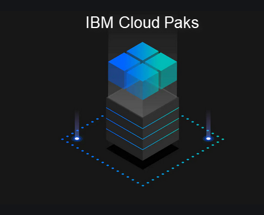

Lab Content: Application Modernization Lab Guides
- ITC-19: Evaluating Java Applications for Modernization
- ITC-20: Modernize WebSphere app to WAS Base Container in IBM Cloud Pak for Applications
- ITC-21: Create and Deploy a Cloud Native App to IBM Cloud Pak for Applications
- ITC-22: Enable policy driven deployments using BM Multicloud manager
- ITC-26: Create and enforce multi-cluster Governance policies with IBM Multicloud Manager
